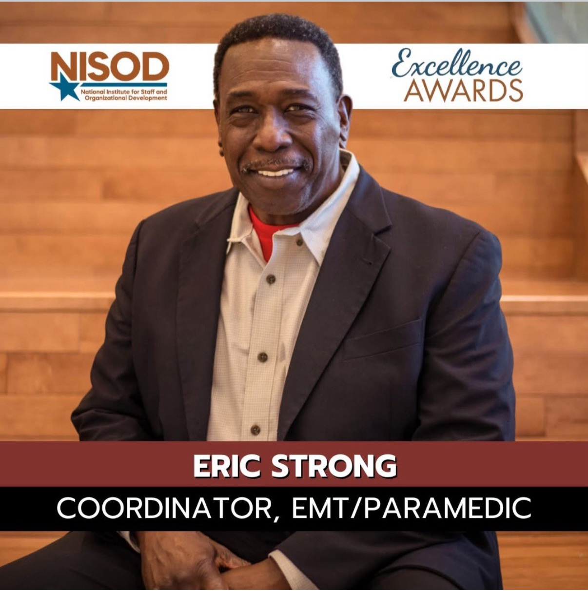
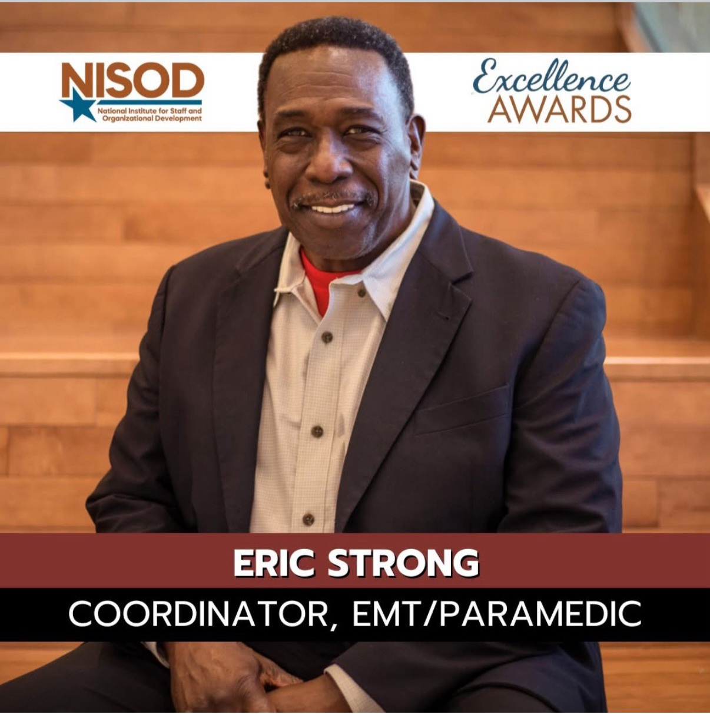

About Us
Our mission is to empower individuals to act confidently in emergency situations. Our team is proud to provide the highest level of support services. We empower our community by offering courses in CPR and First Aid. We give families, community members, and partners the resources they need to stay safe and respond in an emergency.
Meet Our Team
 

With over three decades of service in the Chicago Fire Department, Eric Strong retired as a respected Battalion Chief and Paramedic. Known for his calm leadership under pressure and commitment to saving lives, Eric has trained countless first responders throughout his career. After retirement, he brought his field experience to the classroom as a faculty member at Malcolm X College, where he was honored with the NISOD Excellence Award for his contributions to EMS education. Today, Eric continues to share his expertise through CPR and emergency response training, empowering others with life-saving skills.
Following in the footsteps of her father, Erica Strong is an American Heart Association–certified CPR and BLS instructor with over 8 years of experience. She has led life-saving training for parents, church groups, and families, combining expert knowledge with a warm, approachable teaching style. A dedicated triathlete, she brings energy and real-world perspective to every class, empowering others to act confidently in emergencies.